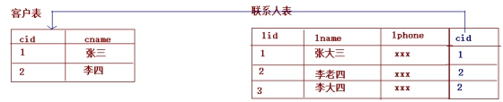

JPA第一天第1章1.ORM概述[了解]1.1为什么使用ORM1.2常见ORM框架第2章hibernate与JPA的概述[了解]2.1hibernate概述2.2JPA概述2.3JPA的优势2.4JPA与hibernate的关系第3章JPA的入门案例3.1需求介绍3.2开发包介绍3.3搭建开发环境[重点]第4章JPA中的主键生成策略第5章JPA的API介绍5.1Persistence对象5.2EntityManagerFactory5.3EntityManager5.4EntityTransaction第6章抽取JPAUtil工具类第7章使用JPA完成增删改查操作7.1保存7.2修改7.3删除7.5JPA中的复杂查询JPA第二天第1章Spring Data JPA的概述1.1Spring Data JPA概述1.2Spring Data JPA的特性1.3Spring Data JPA 与 JPA和hibernate之间的关系第2章Spring Data JPA的快速入门2.1需求说明2.2搭建Spring Data JPA的开发环境2.3使用Spring Data JPA完成需求第3章Spring Data JPA的内部原理剖析3.1Spring Data JPA的常用接口分析3.2Spring Data JPA的实现过程3.3Spring Data JPA完整的调用过程分析第4章Spring Data JPA的查询方式4.1使用Spring Data JPA中接口定义的方法进行查询4.2使用JPQL的方式查询4.3使用SQL语句查询4.4方法命名规则查询JPA第三天第1章Specifications动态查询1.1使用Specifications完成条件查询1.2基于Specifications的分页查询1.3方法对应关系第2章 多表设计2.1表之间关系的划分2.2在JPA框架中表关系的分析步骤第3章JPA中的一对多3.1示例分析3.2表关系建立3.4映射的注解说明3.5一对多的操作第4章JPA中的多对多4.1示例分析4.2表关系建立4.3实体类关系建立以及映射配置4.4映射的注解说明4.5多对多的操作第5章Spring Data JPA中的多表查询5.1对象导航查询5.2使用Specification查询
ORM（Object-Relational Mapping） 表示对象关系映射。 在面向对象的软件开发中，通过ORM，就可以把对象映射到关系型数据库中。只要有一套程序能够做到建立对象与数据库的关联，操作对象就可以直接操作数据库数据，就可以说这套程序实现了ORM对象关系映射 简单的说：ORM就是建立实体类和数据库表之间的关系，从而达到操作实体类就相当于操作数据库表的目的。
当实现一个应用程序时（不使用O/R Mapping），我们可能会写特别多数据访问层的代码，从数据库保存数据、修改数据、删除数据，而这些代码都是重复的。而使用ORM则会大大减少重复性代码。对象关系映射（Object Relational Mapping，简称ORM），主要实现程序对象到关系数据库数据的映射。
常见的orm框架：Mybatis（ibatis）、Hibernate、Jpa
Hibernate是一个开放源代码的对象关系映射框架，它对JDBC进行了非常轻量级的对象封装，它将POJO与数据库表建立映射关系，是一个全自动的orm框架，hibernate可以自动生成SQL语句，自动执行，使得Java程序员可以随心所欲的使用对象编程思维来操纵数据库。
JPA的全称是Java Persistence API， 即Java 持久化API，是SUN公司推出的一套基于ORM的规范，内部是由一系列的接口和抽象类构成。 JPA通过JDK 5.0注解描述对象－关系表的映射关系，并将运行期的实体对象持久化到数据库中。
JPA规范本质上就是一种ORM规范，注意不是ORM框架——因为JPA并未提供ORM实现，它只是制订了一些规范，提供了一些编程的API接口，但具体实现则由服务厂商来提供实现。 JPA和Hibernate的关系就像JDBC和JDBC驱动的关系，JPA是规范，Hibernate除了作为ORM框架之外，它也是一种JPA实现。JPA怎么取代Hibernate呢？JDBC规范可以驱动底层数据库吗？答案是否定的，也就是说，如果使用JPA规范进行数据库操作，底层需要hibernate作为其实现类完成数据持久化工作。
本章节我们是实现的功能是保存一个客户到数据库的客户表中。
由于JPA是sun公司制定的API规范，所以我们不需要导入额外的JPA相关的jar包，只需要导入JPA的提供商的jar包。我们选择Hibernate作为JPA的提供商，所以需要导入Hibernate的相关jar包。 下载网址： http://sourceforge.net/projects/hibernate/files/hibernate-orm/5.0.7.Final/ 页面显示如下图：
3.3.1导入jar包 对于JPA操作，只需要从hibernate提供的资料中找到我们需要的jar导入到工程中即可。
xxxxxxxxxx <properties> <project.build.sourceEncoding>UTF-8</project.build.sourceEncoding> <project.hibernate.version>5.0.7.Final</project.hibernate.version> </properties> <dependencies> <!-- junit --> <dependency> <groupId>junit</groupId> <artifactId>junit</artifactId> <version>4.12</version> <scope>test</scope> </dependency> <!-- hibernate对jpa的支持包 --> <dependency> <groupId>org.hibernate</groupId> <artifactId>hibernate-entitymanager</artifactId> <version>${project.hibernate.version}</version> </dependency> <!-- c3p0 --> <dependency> <groupId>org.hibernate</groupId> <artifactId>hibernate-c3p0</artifactId> <version>${project.hibernate.version}</version> </dependency> <!-- log日志 --> <dependency> <groupId>log4j</groupId> <artifactId>log4j</artifactId> <version>1.2.17</version> </dependency> <!-- Mysql and MariaDB --> <dependency> <groupId>mysql</groupId> <artifactId>mysql-connector-java</artifactId> <version>5.1.6</version> </dependency> </dependencies>3.3.2创建客户的数据库表和客户的实体类
xxxxxxxxxx /*创建客户表*/ CREATE TABLE cst_customer ( cust_id bigint(32) NOT NULL AUTO_INCREMENT COMMENT '客户编号(主键)', cust_name varchar(32) NOT NULL COMMENT '客户名称(公司名称)', cust_source varchar(32) DEFAULT NULL COMMENT '客户信息来源', cust_industry varchar(32) DEFAULT NULL COMMENT '客户所属行业', cust_level varchar(32) DEFAULT NULL COMMENT '客户级别', cust_address varchar(128) DEFAULT NULL COMMENT '客户联系地址', cust_phone varchar(64) DEFAULT NULL COMMENT '客户联系电话', PRIMARY KEY (`cust_id`) ) ENGINE=InnoDB AUTO_INCREMENT=1 DEFAULT CHARSET=utf8;xxxxxxxxxxpublic class Customer implements Serializable { private Long custId; private String custName; private String custSource; private String custIndustry; private String custLevel; private String custAddress; private String custPhone; public Long getCustId() { return custId; } public void setCustId(Long custId) { this.custId = custId; } public String getCustName() { return custName; } public void setCustName(String custName) { this.custName = custName; } public String getCustSource() { return custSource; } public void setCustSource(String custSource) { this.custSource = custSource; } public String getCustIndustry() { return custIndustry; } public void setCustIndustry(String custIndustry) { this.custIndustry = custIndustry; } public String getCustLevel() { return custLevel; } public void setCustLevel(String custLevel) { this.custLevel = custLevel; } public String getCustAddress() { return custAddress; } public void setCustAddress(String custAddress) { this.custAddress = custAddress; } public String getCustPhone() { return custPhone; } public void setCustPhone(String custPhone) { this.custPhone = custPhone; }}3.3.3编写实体类和数据库表的映射配置[重点]
xxxxxxxxxx/*** * 所有的注解都是使用JPA的规范提供的注解， * * 所以在导入注解包的时候，一定要导入javax.persistence下的 */ //声明实体类(name="cst_customer") //建立实体类和表的映射关系public class Customer { //声明当前私有属性为主键 (strategy=GenerationType.IDENTITY) //配置主键的生成策略 (name="cust_id") //指定和表中cust_id字段的映射关系 private Long custId; (name="cust_name") //指定和表中cust_name字段的映射关系 private String custName; (name="cust_source")//指定和表中cust_source字段的映射关系 private String custSource; (name="cust_industry")//指定和表中cust_industry字段的映射关系 private String custIndustry; (name="cust_level")//指定和表中cust_level字段的映射关系 private String custLevel; (name="cust_address")//指定和表中cust_address字段的映射关系 private String custAddress; (name="cust_phone")//指定和表中cust_phone字段的映射关系 private String custPhone; public Long getCustId() { return custId; } public void setCustId(Long custId) { this.custId = custId; } public String getCustName() { return custName; } public void setCustName(String custName) { this.custName = custName; } public String getCustSource() { return custSource; } public void setCustSource(String custSource) { this.custSource = custSource; } public String getCustIndustry() { return custIndustry; } public void setCustIndustry(String custIndustry) { this.custIndustry = custIndustry; } public String getCustLevel() { return custLevel; } public void setCustLevel(String custLevel) { this.custLevel = custLevel; } public String getCustAddress() { return custAddress; } public void setCustAddress(String custAddress) { this.custAddress = custAddress; } public String getCustPhone() { return custPhone; } public void setCustPhone(String custPhone) { this.custPhone = custPhone; }}xxxxxxxxxx <persistence xmlns="http://java.sun.com/xml/ns/persistence" xmlns:xsi="http://www.w3.org/2001/XMLSchema-instance" xsi:schemaLocation="http://java.sun.com/xml/ns/persistence http://java.sun.com/xml/ns/persistence/persistence_2_0.xsd" version="2.0"> <!--配置持久化单元 name：持久化单元名称 transaction-type：事务类型 RESOURCE_LOCAL：本地事务管理 JTA：分布式事务管理 --> <persistence-unit name="myJpa" transaction-type="RESOURCE_LOCAL"> <!--配置JPA规范的服务提供商 --> <provider>org.hibernate.jpa.HibernatePersistenceProvider</provider> <properties> <!-- 数据库驱动 --> <property name="javax.persistence.jdbc.driver" value="com.mysql.jdbc.Driver" /> <!-- 数据库地址 --> <property name="javax.persistence.jdbc.url" value="jdbc:mysql://localhost:3306/ssh" /> <!-- 数据库用户名 --> <property name="javax.persistence.jdbc.user" value="root" /> <!-- 数据库密码 --> <property name="javax.persistence.jdbc.password" value="111111" /> <!--jpa提供者的可选配置：我们的JPA规范的提供者为hibernate，所以jpa的核心配置中兼容hibernate的配 --> <property name="hibernate.show_sql" value="true" /> <property name="hibernate.format_sql" value="true" /> <property name="hibernate.hbm2ddl.auto" value="create" /> </properties> </persistence-unit></persistence>3.4实现保存操作
xxxxxxxxxx public void test() { /** * 创建实体管理类工厂，借助Persistence的静态方法获取 * 其中传递的参数为持久化单元名称，需要jpa配置文件中指定 */ EntityManagerFactory factory = Persistence.createEntityManagerFactory("myJpa"); //创建实体管理类 EntityManager em = factory.createEntityManager(); //获取事务对象 EntityTransaction tx = em.getTransaction(); //开启事务 tx.begin(); Customer c = new Customer(); c.setCustName("传智播客"); //保存操作 em.persist(c); //提交事务 tx.commit(); //释放资源 em.close(); factory.close(); }通过annotation（注解）来映射hibernate实体的,基于annotation的hibernate主键标识为@Id, 其生成规则由@GeneratedValue设定的.这里的@id和@GeneratedValue都是JPA的标准用法。 JPA提供的四种标准用法为TABLE,SEQUENCE,IDENTITY,AUTO。 具体说明如下： IDENTITY:主键由数据库自动生成（主要是自动增长型） 用法：
xxxxxxxxxx (strategy = GenerationType.IDENTITY) private Long custId;SEQUENCE：根据底层数据库的序列来生成主键，条件是数据库支持序列。 用法：
xxxxxxxxxx (strategy = GenerationType.SEQUENCE,generator="payablemoney_seq") (name="payablemoney_seq", sequenceName="seq_payment") private Long custId; //@SequenceGenerator源码中的定义 ({TYPE, METHOD, FIELD}) (RUNTIME) public @interface SequenceGenerator { //表示该表主键生成策略的名称，它被引用在@GeneratedValue中设置的“generator”值中 String name(); //属性表示生成策略用到的数据库序列名称。 String sequenceName() default ""; //表示主键初识值，默认为0 int initialValue() default 0; //表示每次主键值增加的大小，例如设置1，则表示每次插入新记录后自动加1，默认为50 int allocationSize() default 50; }AUTO：主键由程序控制 用法：
xxxxxxxxxx (strategy = GenerationType.AUTO) private Long custId;TABLE：使用一个特定的数据库表格来保存主键 用法：
xxxxxxxxxx (strategy = GenerationType.TABLE, generator="payablemoney_gen") (name = "pk_gen", table="tb_generator", pkColumnName="gen_name", valueColumnName="gen_value", pkColumnValue="PAYABLEMOENY_PK", allocationSize=1 ) private Long custId;//@TableGenerator的定义： ({TYPE, METHOD, FIELD}) (RUNTIME) public @interface TableGenerator { //表示该表主键生成策略的名称，它被引用在@GeneratedValue中设置的“generator”值中 String name(); //表示表生成策略所持久化的表名，例如，这里表使用的是数据库中的“tb_generator”。 String table() default ""; //catalog和schema具体指定表所在的目录名或是数据库名 String catalog() default ""; String schema() default ""; //属性的值表示在持久化表中，该主键生成策略所对应键值的名称。例如在“tb_generator”中将“gen_name”作为主键的键值 String pkColumnName() default ""; //属性的值表示在持久化表中，该主键当前所生成的值，它的值将会随着每次创建累加。例如，在“tb_generator”中将“gen_value”作为主键的值 String valueColumnName() default ""; //属性的值表示在持久化表中，该生成策略所对应的主键。例如在“tb_generator”表中，将“gen_name”的值为“CUSTOMER_PK”。 String pkColumnValue() default ""; //表示主键初识值，默认为0。 int initialValue() default 0; //表示每次主键值增加的大小，例如设置成1，则表示每次创建新记录后自动加1，默认为50。 int allocationSize() default 50; UniqueConstraint[] uniqueConstraints() default {}; } //这里应用表tb_generator，定义为 ： CREATE TABLE tb_generator ( id NUMBER NOT NULL, gen_name VARCHAR2(255) NOT NULL, gen_value NUMBER NOT NULL, PRIMARY KEY(id) )Persistence对象主要作用是用于获取EntityManagerFactory对象的。通过调用该类的createEntityManagerFactory静态方法，根据配置文件中持久化单元名称创建EntityManagerFactory。
xxxxxxxxxx//1. 创建 EntitymanagerFactoryString unitName = "myJpa";EntityManagerFactory factory= Persistence.createEntityManagerFactory(unitName);EntityManagerFactory 接口主要用来创建 EntityManager 实例
xxxxxxxxxx//创建实体管理类EntityManager em = factory.createEntityManager();由于EntityManagerFactory 是一个线程安全的对象（即多个线程访问同一个EntityManagerFactory对象不会有线程安全问题），并且EntityManagerFactory 的创建极其浪费资源，所以在使用JPA编程时，我们可以对EntityManagerFactory的创建进行优化，只需要做到一个工程只存在一个EntityManagerFactory 即可
在 JPA 规范中, EntityManager是完成持久化操作的核心对象。实体类作为普通 java对象，只有在调用 EntityManager将其持久化后才会变成持久化对象。EntityManager对象在一组实体类与底层数据源之间进行 O/R 映射的管理。它可以用来管理和更新 Entity Bean, 根椐主键查找 Entity Bean, 还可以通过JPQL语句查询实体。 我们可以通过调用EntityManager的方法完成获取事务，以及持久化数据库的操作 方法说明： getTransaction : 获取事务对象 persist ： 保存操作 merge ： 更新操作 remove ： 删除操作 find/getReference ： 根据id查询
在 JPA 规范中, EntityTransaction是完成事务操作的核心对象，对于EntityTransaction在我们的java代码中承接的功能比较简单 begin：开启事务 commit：提交事务 rollback：回滚事务
xxxxxxxxxxpackage cn.itcast.dao;import javax.persistence.EntityManager;import javax.persistence.EntityManagerFactory;import javax.persistence.Persistence;public final class JPAUtil { // JPA的实体管理器工厂：相当于Hibernate的SessionFactory private static EntityManagerFactory em; // 使用静态代码块赋值 static { // 注意：该方法参数必须和persistence.xml中persistence-unit标签name属性取值一致 em = Persistence.createEntityManagerFactory("myPersistUnit"); } /** * 使用管理器工厂生产一个管理器对象 * * @return */ public static EntityManager getEntityManager() { return em.createEntityManager(); }}xxxxxxxxxx /** * 保存一个实体 */ public void testAdd() { // 定义对象 Customer c = new Customer(); c.setCustName("传智学院"); c.setCustLevel("VIP客户"); c.setCustSource("网络"); c.setCustIndustry("IT教育"); c.setCustAddress("昌平区北七家镇"); c.setCustPhone("010-84389340"); EntityManager em = null; EntityTransaction tx = null; try { // 获取实体管理对象 em = JPAUtil.getEntityManager(); // 获取事务对象 tx = em.getTransaction(); // 开启事务 tx.begin(); // 执行操作 em.persist(c); // 提交事务 tx.commit(); } catch (Exception e) { // 回滚事务 tx.rollback(); e.printStackTrace(); } finally { // 释放资源 em.close(); } }xxxxxxxxxx public void testMerge(){ //定义对象 EntityManager em=null; EntityTransaction tx=null; try{ //获取实体管理对象 em=JPAUtil.getEntityManager(); //获取事务对象 tx=em.getTransaction(); //开启事务 tx.begin(); //执行操作 Customer c1 = em.find(Customer.class, 6L); c1.setCustName("江苏传智学院"); em.clear();//把c1对象从缓存中清除出去 em.merge(c1); //提交事务 tx.commit(); }catch(Exception e){ //回滚事务 tx.rollback(); e.printStackTrace(); }finally{ //释放资源 em.close(); } }xxxxxxxxxx /** * 删除 */ public void testRemove() { // 定义对象 EntityManager em = null; EntityTransaction tx = null; try { // 获取实体管理对象 em = JPAUtil.getEntityManager(); // 获取事务对象 tx = em.getTransaction(); // 开启事务 tx.begin(); // 执行操作 Customer c1 = em.find(Customer.class, 6L); em.remove(c1); // 提交事务 tx.commit(); } catch (Exception e) { // 回滚事务 tx.rollback(); e.printStackTrace(); } finally { // 释放资源 em.close(); } }7.4根据id查询
xxxxxxxxxx /** * 查询一个： 使用立即加载的策略 */ public void testGetOne() { // 定义对象 EntityManager em = null; EntityTransaction tx = null; try { // 获取实体管理对象 em = JPAUtil.getEntityManager(); // 获取事务对象 tx = em.getTransaction(); // 开启事务 tx.begin(); // 执行操作 Customer c1 = em.find(Customer.class, 1L); // 提交事务 tx.commit(); System.out.println(c1); // 输出查询对象 } catch (Exception e) { // 回滚事务 tx.rollback(); e.printStackTrace(); } finally { // 释放资源 em.close(); } } // 查询实体的缓存问题 public void testGetOne() { // 定义对象 EntityManager em = null; EntityTransaction tx = null; try { // 获取实体管理对象 em = JPAUtil.getEntityManager(); // 获取事务对象 tx = em.getTransaction(); // 开启事务 tx.begin(); // 执行操作 Customer c1 = em.find(Customer.class, 1L); Customer c2 = em.find(Customer.class, 1L); System.out.println(c1 == c2);// 输出结果是true，EntityManager也有缓存 // 提交事务 tx.commit(); System.out.println(c1); } catch (Exception e) { // 回滚事务 tx.rollback(); e.printStackTrace(); } finally { // 释放资源 em.close(); } } // 延迟加载策略的方法： /** * 查询一个： 使用延迟加载策略 */ public void testLoadOne() { // 定义对象 EntityManager em = null; EntityTransaction tx = null; try { // 获取实体管理对象 em = JPAUtil.getEntityManager(); // 获取事务对象 tx = em.getTransaction(); // 开启事务 tx.begin(); // 执行操作 Customer c1 = em.getReference(Customer.class, 1L); // 提交事务 tx.commit(); System.out.println(c1); } catch (Exception e) { // 回滚事务 tx.rollback(); e.printStackTrace(); } finally { // 释放资源 em.close(); } }JPQL全称Java Persistence Query Language 基于首次在EJB2.0中引入的EJB查询语言(EJB QL),Java持久化查询语言(JPQL)是一种可移植的查询语言，旨在以面向对象表达式语言的表达式，将SQL语法和简单查询语义绑定在一起·使用这种语言编写的查询是可移植的，可以被编译成所有主流数据库服务器上的SQL。 其特征与原生SQL语句类似，并且完全面向对象，通过类名和属性访问，而不是表名和表的属性。 7.5.1查询全部
xxxxxxxxxx //查询所有客户 public void findAll() { EntityManager em = null; EntityTransaction tx = null; try { //获取实体管理对象 em = JPAUtil.getEntityManager(); //获取事务对象 tx = em.getTransaction(); tx.begin(); // 创建query对象 String jpql = "from Customer"; Query query = em.createQuery(jpql); // 查询并得到返回结果 List list = query.getResultList(); // 得到集合返回类型 for (Object object : list) { System.out.println(object); } tx.commit(); } catch (Exception e) { // 回滚事务 tx.rollback(); e.printStackTrace(); } finally { // 释放资源 em.close(); } }7.5.2分页查询
xxxxxxxxxx //分页查询客户 public void findPaged () { EntityManager em = null; EntityTransaction tx = null; try { //获取实体管理对象 em = JPAUtil.getEntityManager(); //获取事务对象 tx = em.getTransaction(); tx.begin(); //创建query对象 String jpql = "from Customer"; Query query = em.createQuery(jpql); //起始索引 query.setFirstResult(0); //每页显示条数 query.setMaxResults(2); //查询并得到返回结果 List list = query.getResultList(); //得到集合返回类型 for (Object object : list) { System.out.println(object); } tx.commit(); } catch (Exception e) { // 回滚事务 tx.rollback(); e.printStackTrace(); } finally { // 释放资源 em.close(); } }7.5.3条件查询
xxxxxxxxxx //条件查询 public void findCondition () { EntityManager em = null; EntityTransaction tx = null; try { //获取实体管理对象 em = JPAUtil.getEntityManager(); //获取事务对象 tx = em.getTransaction(); tx.begin(); //创建query对象 String jpql = "from Customer where custName like ? "; Query query = em.createQuery(jpql); //对占位符赋值，从1开始 query.setParameter(1, "传智播客%"); //查询并得到返回结果 Object object = query.getSingleResult(); //得到唯一的结果集对象 System.out.println(object); tx.commit(); } catch (Exception e) { // 回滚事务 tx.rollback(); e.printStackTrace(); } finally { // 释放资源 em.close(); } }7.5.4排序查询
xxxxxxxxxx //根据客户id倒序查询所有客户 //查询所有客户 public void testOrder() { EntityManager em = null; EntityTransaction tx = null; try { //获取实体管理对象 em = JPAUtil.getEntityManager(); //获取事务对象 tx = em.getTransaction(); tx.begin(); // 创建query对象 String jpql = "from Customer order by custId desc"; Query query = em.createQuery(jpql); // 查询并得到返回结果 List list = query.getResultList(); // 得到集合返回类型 for (Object object : list) { System.out.println(object); } tx.commit(); } catch (Exception e) { // 回滚事务 tx.rollback(); e.printStackTrace(); } finally { // 释放资源 em.close(); } }7.5.5统计查询
//统计查询public void findCount() { EntityManager em = null; EntityTransaction tx = null; try { //获取实体管理对象 em = JPAUtil.getEntityManager(); //获取事务对象 tx = em.getTransaction(); tx.begin(); // 查询全部客户 // 1.创建query对象 String jpql = "select count(custId) from Customer"; Query query = em.createQuery(jpql); // 2.查询并得到返回结果 Object count = query.getSingleResult(); // 得到集合返回类型 System.out.println(count); tx.commit(); } catch (Exception e) { // 回滚事务 tx.rollback(); e.printStackTrace(); } finally { // 释放资源 em.close(); }}Spring Data JPA 是 Spring 基于 ORM 框架、JPA 规范的基础上封装的一套JPA应用框架，可使开发者用极简的代码即可实现对数据库的访问和操作。它提供了包括增删改查等在内的常用功能，且易于扩展！学习并使用 Spring Data JPA 可以极大提高开发效率！ Spring Data JPA 让我们解脱了DAO层的操作，基本上所有CRUD都可以依赖于它来实现,在实际的工作工程中，推荐使用Spring Data JPA + ORM（如：hibernate）完成操作，这样在切换不同的ORM框架时提供了极大的方便，同时也使数据库层操作更加简单，方便解耦
SpringData Jpa 极大简化了数据库访问层代码。 如何简化的呢？ 使用了SpringDataJpa，我们的dao层中只需要写接口，就自动具有了增删改查、分页查询等方法。
JPA是一套规范，内部是有接口和抽象类组成的。hibernate是一套成熟的ORM框架，而且Hibernate实现了JPA规范，所以也可以称hibernate为JPA的一种实现方式，我们使用JPA的API编程，意味着站在更高的角度上看待问题（面向接口编程） Spring Data JPA是Spring提供的一套对JPA操作更加高级的封装，是在JPA规范下的专门用来进行数据持久化的解决方案。
Spring Data JPA完成客户的基本CRUD操作
2.2.1引入Spring Data JPA的坐标 使用Spring Data JPA，需要整合Spring与Spring Data JPA，并且需要提供JPA的服务提供者hibernate，所以需要导入spring相关坐标，hibernate坐标，数据库驱动坐标等
xxxxxxxxxx <properties> <spring.version>4.2.4.RELEASE</spring.version> <hibernate.version>5.0.7.Final</hibernate.version> <slf4j.version>1.6.6</slf4j.version> <log4j.version>1.2.12</log4j.version> <c3p0.version>0.9.1.2</c3p0.version> <mysql.version>5.1.6</mysql.version> </properties> <dependencies> <!-- junit单元测试 --> <dependency> <groupId>junit</groupId> <artifactId>junit</artifactId> <version>4.9</version> <scope>test</scope> </dependency> <!-- spring beg --> <dependency> <groupId>org.aspectj</groupId> <artifactId>aspectjweaver</artifactId> <version>1.6.8</version> </dependency> <dependency> <groupId>org.springframework</groupId> <artifactId>spring-aop</artifactId> <version>${spring.version}</version> </dependency> <dependency> <groupId>org.springframework</groupId> <artifactId>spring-context</artifactId> <version>${spring.version}</version> </dependency> <dependency> <groupId>org.springframework</groupId> <artifactId>spring-context-support</artifactId> <version>${spring.version}</version> </dependency> <dependency> <groupId>org.springframework</groupId> <artifactId>spring-orm</artifactId> <version>${spring.version}</version> </dependency> <dependency> <groupId>org.springframework</groupId> <artifactId>spring-beans</artifactId> <version>${spring.version}</version> </dependency> <dependency> <groupId>org.springframework</groupId> <artifactId>spring-core</artifactId> <version>${spring.version}</version> </dependency> <!-- spring end --> <!-- hibernate beg --> <dependency> <groupId>org.hibernate</groupId> <artifactId>hibernate-core</artifactId> <version>${hibernate.version}</version> </dependency> <dependency> <groupId>org.hibernate</groupId> <artifactId>hibernate-entitymanager</artifactId> <version>${hibernate.version}</version> </dependency> <dependency> <groupId>org.hibernate</groupId> <artifactId>hibernate-validator</artifactId> <version>5.2.1.Final</version> </dependency> <!-- hibernate end --> <!-- c3p0 beg --> <dependency> <groupId>c3p0</groupId> <artifactId>c3p0</artifactId> <version>${c3p0.version}</version> </dependency> <!-- c3p0 end --> <!-- log end --> <dependency> <groupId>log4j</groupId> <artifactId>log4j</artifactId> <version>${log4j.version}</version> </dependency> <dependency> <groupId>org.slf4j</groupId> <artifactId>slf4j-api</artifactId> <version>${slf4j.version}</version> </dependency> <dependency> <groupId>org.slf4j</groupId> <artifactId>slf4j-log4j12</artifactId> <version>${slf4j.version}</version> </dependency> <!-- log end --> <dependency> <groupId>mysql</groupId> <artifactId>mysql-connector-java</artifactId> <version>${mysql.version}</version> </dependency> <dependency> <groupId>org.springframework.data</groupId> <artifactId>spring-data-jpa</artifactId> <version>1.9.0.RELEASE</version> </dependency> <dependency> <groupId>org.springframework</groupId> <artifactId>spring-test</artifactId> <version>4.2.4.RELEASE</version> </dependency> <!-- el beg 使用spring data jpa 必须引入 --> <dependency> <groupId>javax.el</groupId> <artifactId>javax.el-api</artifactId> <version>2.2.4</version> </dependency> <dependency> <groupId>org.glassfish.web</groupId> <artifactId>javax.el</artifactId> <version>2.2.4</version> </dependency> <!-- el end --> </dependencies>2.2.2整合Spring Data JPA与Spring
xxxxxxxxxx <beans xmlns="http://www.springframework.org/schema/beans" xmlns:xsi="http://www.w3.org/2001/XMLSchema-instance" xmlns:aop="http://www.springframework.org/schema/aop" xmlns:context="http://www.springframework.org/schema/context" xmlns:jdbc="http://www.springframework.org/schema/jdbc" xmlns:tx="http://www.springframework.org/schema/tx" xmlns:jpa="http://www.springframework.org/schema/data/jpa" xmlns:task="http://www.springframework.org/schema/task" xsi:schemaLocation=" http://www.springframework.org/schema/beans http://www.springframework.org/schema/beans/spring-beans.xsd http://www.springframework.org/schema/aop http://www.springframework.org/schema/aop/spring-aop.xsd http://www.springframework.org/schema/context http://www.springframework.org/schema/context/spring-context.xsd http://www.springframework.org/schema/jdbc http://www.springframework.org/schema/jdbc/spring-jdbc.xsd http://www.springframework.org/schema/tx http://www.springframework.org/schema/tx/spring-tx.xsd http://www.springframework.org/schema/data/jpa http://www.springframework.org/schema/data/jpa/spring-jpa.xsd"> <!-- 1.dataSource 配置数据库连接池--> <bean id="dataSource" class="com.mchange.v2.c3p0.ComboPooledDataSource"> <property name="driverClass" value="com.mysql.jdbc.Driver" /> <property name="jdbcUrl" value="jdbc:mysql://localhost:3306/jpa" /> <property name="user" value="root" /> <property name="password" value="111111" /> </bean> <!-- 2.配置entityManagerFactory --> <bean id="entityManagerFactory" class="org.springframework.orm.jpa.LocalContainerEntityManagerFactoryBean"> <property name="dataSource" ref="dataSource" /> <property name="packagesToScan" value="cn.itcast.entity" /> <property name="persistenceProvider"> <bean class="org.hibernate.jpa.HibernatePersistenceProvider" /> </property> <!--JPA的供应商适配器--> <property name="jpaVendorAdapter"> <bean class="org.springframework.orm.jpa.vendor.HibernateJpaVendorAdapter"> <property name="generateDdl" value="false" /> <property name="database" value="MYSQL" /> <property name="databasePlatform" value="org.hibernate.dialect.MySQLDialect" /> <property name="showSql" value="true" /> </bean> </property> <property name="jpaDialect"> <bean class="org.springframework.orm.jpa.vendor.HibernateJpaDialect" /> </property> </bean> <!-- 3.事务管理器--> <!-- JPA事务管理器 --> <bean id="transactionManager" class="org.springframework.orm.jpa.JpaTransactionManager"> <property name="entityManagerFactory" ref="entityManagerFactory" /> </bean> <!-- 整合spring data jpa--> <jpa:repositories base-package="cn.itcast.dao" transaction-manager-ref="transactionManager" entity-manager-factory-ref="entityManagerFactory"></jpa:repositories> <!-- 4.txAdvice--> <tx:advice id="txAdvice" transaction-manager="transactionManager"> <tx:attributes> <tx:method name="save*" propagation="REQUIRED"/> <tx:method name="insert*" propagation="REQUIRED"/> <tx:method name="update*" propagation="REQUIRED"/> <tx:method name="delete*" propagation="REQUIRED"/> <tx:method name="get*" read-only="true"/> <tx:method name="find*" read-only="true"/> <tx:method name="*" propagation="REQUIRED"/> </tx:attributes> </tx:advice> <!-- 5.aop--> <aop:config> <aop:pointcut id="pointcut" expression="execution(* cn.itcast.service.*.*(..))" /> <aop:advisor advice-ref="txAdvice" pointcut-ref="pointcut" /> </aop:config> <context:component-scan base-package="cn.itcast"></context:component-scan> <!--组装其它 配置文件--></beans>2.2.3使用JPA注解配置映射关系 我们使用昨天案例中的Customer实体类对象，已经配置好了映射关系
xxxxxxxxxxpackage cn.itcast.entity;import javax.persistence.Column;import javax.persistence.Entity;import javax.persistence.GeneratedValue;import javax.persistence.GenerationType;import javax.persistence.Id;import javax.persistence.Table;/** * * * 所有的注解都是使用JPA的规范提供的注解， * * 所以在导入注解包的时候，一定要导入javax.persistence下的 */ //声明实体类(name="cst_customer") //建立实体类和表的映射关系public class Customer { //声明当前私有属性为主键 (strategy=GenerationType.IDENTITY) //配置主键的生成策略 (name="cust_id") //指定和表中cust_id字段的映射关系 private Long custId; (name="cust_name") //指定和表中cust_name字段的映射关系 private String custName; (name="cust_source")//指定和表中cust_source字段的映射关系 private String custSource; (name="cust_industry")//指定和表中cust_industry字段的映射关系 private String custIndustry; (name="cust_level")//指定和表中cust_level字段的映射关系 private String custLevel; (name="cust_address")//指定和表中cust_address字段的映射关系 private String custAddress; (name="cust_phone")//指定和表中cust_phone字段的映射关系 private String custPhone; public Long getCustId() { return custId; } public void setCustId(Long custId) { this.custId = custId; } public String getCustName() { return custName; } public void setCustName(String custName) { this.custName = custName; } public String getCustSource() { return custSource; } public void setCustSource(String custSource) { this.custSource = custSource; } public String getCustIndustry() { return custIndustry; } public void setCustIndustry(String custIndustry) { this.custIndustry = custIndustry; } public String getCustLevel() { return custLevel; } public void setCustLevel(String custLevel) { this.custLevel = custLevel; } public String getCustAddress() { return custAddress; } public void setCustAddress(String custAddress) { this.custAddress = custAddress; } public String getCustPhone() { return custPhone; } public void setCustPhone(String custPhone) { this.custPhone = custPhone; }}2.3.1编写符合Spring Data JPA规范的Dao层接口 Spring Data JPA是spring提供的一款对于数据访问层（Dao层）的框架，使用Spring Data JPA，只需要按照框架的规范提供dao接口，不需要实现类就可以完成数据库的增删改查、分页查询等方法的定义，极大的简化了我们的开发过程。 在Spring Data JPA中，对于定义符合规范的Dao层接口，我们只需要遵循以下几点就可以了： 1.创建一个Dao层接口，并实现JpaRepository和JpaSpecificationExecutor 2.提供相应的泛型
xxxxxxxxxxpackage cn.itcast.dao;import java.util.List;import org.springframework.data.jpa.repository.JpaRepository;import org.springframework.data.jpa.repository.JpaSpecificationExecutor;import cn.itcast.entity.Customer;/** * JpaRepository<实体类类型，主键类型>：用来完成基本CRUD操作 * JpaSpecificationExecutor<实体类类型>：用于复杂查询（分页等查询操作） */public interface CustomerDao extends JpaRepository<Customer, Long>, JpaSpecificationExecutor<Customer> {}这样我们就定义好了一个符合Spring Data JPA规范的Dao层接口2.3.2完成基本CRUD操作完成了Spring Data JPA的环境搭建，并且编写了符合Spring Data JPA 规范的Dao层接口之后，就可以使用定义好的Dao层接口进行客户的基本CRUD操作(SpringJUnit4ClassRunner.class)(locations="classpath:applicationContext.xml")public class CustomerDaoTest { private CustomerDao customerDao; /** * 保存客户：调用save(obj)方法 */ public void testSave() { Customer c = new Customer(); c.setCustName("传智播客"); customerDao.save(c); } /** * 修改客户：调用save(obj)方法 * 对于save方法的解释：如果执行此方法是对象中存在id属性，即为更新操作会先根据id查询，再更新 * 如果执行此方法中对象中不存在id属性，即为保存操作 * */ public void testUpdate() { //根据id查询id为1的客户 Customer customer = customerDao.findOne(1l); //修改客户名称 customer.setCustName("传智播客顺义校区"); //更新 customerDao.save(customer); } /** * 根据id删除：调用delete(id)方法 */ public void testDelete() { customerDao.delete(1l); } /** * 根据id查询：调用findOne(id)方法 */ public void testFindById() { Customer customer = customerDao.findOne(2l); System.out.println(customer); }}在客户的案例中，我们发现在自定义的CustomerDao中，并没有提供任何方法就可以使用其中的很多方法，那么这些方法究竟是怎么来的呢？答案很简单，对于我们自定义的Dao接口，由于继承了JpaRepository和JpaSpecificationExecutor，所以我们可以使用这两个接口的所有方法。 在使用Spring Data JPA时，一般实现JpaRepository和JpaSpecificationExecutor接口，这样就可以使用这些接口中定义的方法，但是这些方法都只是一些声明，没有具体的实现方式，那么在 Spring Data JPA中它又是怎么实现的呢？
通过对客户案例，以debug断点调试的方式，通过分析Spring Data JPA的原来来分析程序的执行过程 我们以findOne方法为例进行分析
在继承JpaRepository，和JpaRepository接口后,我们就可以使用接口中定义的方法进行查询
使用Spring Data JPA提供的查询方法已经可以解决大部分的应用场景，但是对于某些业务来说，我们还需要灵活的构造查询条件，这时就可以使用@Query注解，结合JPQL的语句方式完成查询 @Query 注解的使用非常简单，只需在方法上面标注该注解，同时提供一个JPQL查询语句即可
xxxxxxxxxxpublic interface CustomerDao extends JpaRepository<Customer, Long>,JpaSpecificationExecutor<Customer> { //@Query 使用jpql的方式查询。 (value="from Customer") public List<Customer> findAllCustomer(); //@Query 使用jpql的方式查询。?1代表参数的占位符，其中1对应方法中的参数索引 (value="from Customer where custName = ?1") public Customer findCustomer(String custName);}此外，也可以通过使用 @Query 来执行一个更新操作，为此，我们需要在使用 @Query 的同时，用 @Modifying 来将该操作标识为修改查询，这样框架最终会生成一个更新的操作，而非查询
xxxxxxxxxx (value="update Customer set custName = ?1 where custId = ?2") public void updateCustomer(String custName,Long custId);Spring Data JPA同样也支持sql语句的查询，如下：
xxxxxxxxxx /** * nativeQuery : 使用本地sql的方式查询 */ (value="select * from cst_customer",nativeQuery=true) public void findSql();顾名思义，方法命名规则查询就是根据方法的名字，就能创建查询。只需要按照Spring Data JPA提供的方法命名规则定义方法的名称，就可以完成查询工作。Spring Data JPA在程序执行的时候会根据方法名称进行解析，并自动生成查询语句进行查询 按照Spring Data JPA 定义的规则，查询方法以findBy开头，涉及条件查询时，条件的属性用条件关键字连接，要注意的是：条件属性首字母需大写。框架在进行方法名解析时，会先把方法名多余的前缀截取掉，然后对剩下部分进行解析。
xxxxxxxxxx //方法命名方式查询（根据客户名称查询客户） public Customer findByCustName(String custName);具体的关键字，使用方法和生产成SQL如下表所示
| Keyword | Sample | JPQL |
|---|---|---|
| And | findByLastnameAndFirstname | … where x.lastname = ?1 and x.firstname = ?2 |
| Or | findByLastnameOrFirstname | … where x.lastname = ?1 or x.firstname = ?2 |
| Is,Equals | findByFirstnameIs,findByFirstnameEquals | … where x.firstname = ?1 |
| Between | findByStartDateBetween | … where x.startDate between ?1 and ?2 |
| LessThan | findByAgeLessThan | … where x.age < ?1 |
| LessThanEqual | findByAgeLessThanEqual | … where x.age ⇐ ?1 |
| GreaterThan | findByAgeGreaterThan | … where x.age > ?1 |
| GreaterThanEqual | findByAgeGreaterThanEqual | … where x.age >= ?1 |
| After | findByStartDateAfter | … where x.startDate > ?1 |
| Before | findByStartDateBefore | … where x.startDate < ?1 |
| IsNull | findByAgeIsNull | … where x.age is null |
| IsNotNull,NotNull | findByAge(Is)NotNull | … where x.age not null |
| Like | findByFirstnameLike | … where x.firstname like ?1 |
| NotLike | findByFirstnameNotLike | … where x.firstname not like ?1 |
| StartingWith | findByFirstnameStartingWith | … where x.firstname like ?1(parameter bound with appended%) |
| EndingWith | findByFirstnameEndingWith | … where x.firstname like ?1(parameter bound with prepended%) |
| Containing | findByFirstnameContaining | … where x.firstname like ?1(parameter bound wrapped in%) |
| OrderBy | findByAgeOrderByLastnameDesc | … where x.age = ?1 order by x.lastname desc |
| Not | findByLastnameNot | |
| In | findByAgeIn(Collectionages) | … where x.age in ?1 |
| NotIn | findByAgeNotIn(Collectionage) | … where x.age not in ?1 |
| TRUE | findByActiveTrue() | … where x.active = true |
| FALSE | findByActiveFalse() | … where x.active = false |
| IgnoreCase | findByFirstnameIgnoreCase | … where UPPER(x.firstame) = UPPER(?1) |
有时我们在查询某个实体的时候，给定的条件是不固定的，这时就需要动态构建相应的查询语句，在Spring Data JPA中可以通过JpaSpecificationExecutor接口查询。相比JPQL,其优势是类型安全,更加的面向对象。
xxxxxxxxxximport java.util.List;import org.springframework.data.domain.Page;import org.springframework.data.domain.Pageable;import org.springframework.data.domain.Sort;import org.springframework.data.jpa.domain.Specification;/** * JpaSpecificationExecutor中定义的方法 **/ public interface JpaSpecificationExecutor<T> { //根据条件查询一个对象 T findOne(Specification<T> spec); //根据条件查询集合 List<T> findAll(Specification<T> spec); //根据条件分页查询 Page<T> findAll(Specification<T> spec, Pageable pageable); //排序查询查询 List<T> findAll(Specification<T> spec, Sort sort); //统计查询 long count(Specification<T> spec);}对于JpaSpecificationExecutor，这个接口基本是围绕着Specification接口来定义的。我们可以简单的理解为，Specification构造的就是查询条件。 Specification接口中只定义了如下一个方法：
xxxxxxxxxx //构造查询条件 /** * root ：Root接口，代表查询的根对象，可以通过root获取实体中的属性 * query ：代表一个顶层查询对象，用来自定义查询 * cb ：用来构建查询，此对象里有很多条件方法 **/ public Predicate toPredicate(Root<T> root, CriteriaQuery<?> query, CriteriaBuilder cb);xxxxxxxxxx //依赖注入customerDao private CustomerDao customerDao; public void testSpecifications() { //使用匿名内部类的方式，创建一个Specification的实现类，并实现toPredicate方法 Specification <Customer> spec = new Specification<Customer>() { public Predicate toPredicate(Root<Customer> root, CriteriaQuery<?> query, CriteriaBuilder cb) { //cb:构建查询，添加查询方式 like：模糊匹配 //root：从实体Customer对象中按照custName属性进行查询 return cb.like(root.get("custName").as(String.class), "传智播客%"); } }; Customer customer = customerDao.findOne(spec); System.out.println(customer); }xxxxxxxxxx public void testPage() { //构造查询条件 Specification<Customer> spec = new Specification<Customer>() { public Predicate toPredicate(Root<Customer> root, CriteriaQuery<?> query, CriteriaBuilder cb) { return cb.like(root.get("custName").as(String.class), "传智%"); } }; /** * 构造分页参数 * Pageable : 接口 * PageRequest实现了Pageable接口，调用构造方法的形式构造 * 第一个参数：页码（从0开始） * 第二个参数：每页查询条数 */ Pageable pageable = new PageRequest(0, 5); /** * 分页查询，封装为Spring Data Jpa 内部的page bean * 此重载的findAll方法为分页方法需要两个参数 * 第一个参数：查询条件Specification * 第二个参数：分页参数 */ Page<Customer> page = customerDao.findAll(spec,pageable); }对于Spring Data JPA中的分页查询，是其内部自动实现的封装过程，返回的是一个Spring Data JPA提供的pageBean对象。其中的方法说明如下：
xxxxxxxxxx //获取总页数 int getTotalPages(); //获取总记录数 long getTotalElements();//获取列表数据List<T> getContent();| 方法名称 | Sql对应关系 |
|---|---|
| equle | filed = value |
| gt（greaterThan ） | filed > value |
| lt（lessThan ） | filed < value |
| ge（greaterThanOrEqualTo ） | filed >= value |
| le（ lessThanOrEqualTo） | filed <= value |
| notEqule | filed != value |
| like | filed like value |
| notLike | filed not like value |
数据库中多表之间存在着三种关系，如图所示。 从图可以看出，系统设计的三种实体关系分别为：多对多、一对多和一对一关系。注意：一对多关系可以看为两种： 即一对多，多对一。所以说四种更精确。 明确： 我们今天只涉及实际开发中常用的关联关系，一对多和多对多。而一对一的情况，在实际开发中几乎不用。
在实际开发中，我们数据库的表难免会有相互的关联关系，在操作表的时候就有可能会涉及到多张表的操作。而在这种实现了ORM思想的框架中（如JPA），可以让我们通过操作实体类就实现对数据库表的操作。所以今天我们的学习重点是：掌握配置实体之间的关联关系。
xxxxxxxxxx如果关系确定错了，后面做的所有操作就都不可能正确。
我们采用的示例为客户和联系人。 客户：指的是一家公司，我们记为A。 联系人：指的是A公司中的员工。 在不考虑兼职的情况下，公司和员工的关系即为一对多。
在一对多关系中，我们习惯把一的一方称之为主表，把多的一方称之为从表。在数据库中建立一对多的关系，需要使用数据库的外键约束。 什么是外键？ 指的是从表中有一列，取值参照主表的主键，这一列就是外键。 一对多数据库关系的建立，如下图所示  3.3实体类关系建立以及映射配置 在实体类中，由于客户是少的一方，它应该包含多个联系人，所以实体类要体现出客户中有多个联系人的信息，代码如下：
xxxxxxxxxx/** * 客户的实体类 * 明确使用的注解都是JPA规范的 * 所以导包都要导入javax.persistence包下的 *///表示当前类是一个实体类(name="cst_customer")//建立当前实体类和表之间的对应关系public class Customer implements Serializable { //表明当前私有属性是主键 (strategy=GenerationType.IDENTITY)//指定主键的生成策略 (name="cust_id")//指定和数据库表中的cust_id列对应 private Long custId; (name="cust_name")//指定和数据库表中的cust_name列对应 private String custName; (name="cust_source")//指定和数据库表中的cust_source列对应 private String custSource; (name="cust_industry")//指定和数据库表中的cust_industry列对应 private String custIndustry; (name="cust_level")//指定和数据库表中的cust_level列对应 private String custLevel; (name="cust_address")//指定和数据库表中的cust_address列对应 private String custAddress; (name="cust_phone")//指定和数据库表中的cust_phone列对应 private String custPhone; //配置客户和联系人的一对多关系 (targetEntity=LinkMan.class) (name="lkm_cust_id",referencedColumnName="cust_id") private Set<LinkMan> linkmans = new HashSet<LinkMan>(0); public Long getCustId() { return custId; } public void setCustId(Long custId) { this.custId = custId; } public String getCustName() { return custName; } public void setCustName(String custName) { this.custName = custName; } public String getCustSource() { return custSource; } public void setCustSource(String custSource) { this.custSource = custSource; } public String getCustIndustry() { return custIndustry; } public void setCustIndustry(String custIndustry) { this.custIndustry = custIndustry; } public String getCustLevel() { return custLevel; } public void setCustLevel(String custLevel) { this.custLevel = custLevel; } public String getCustAddress() { return custAddress; } public void setCustAddress(String custAddress) { this.custAddress = custAddress; } public String getCustPhone() { return custPhone; } public void setCustPhone(String custPhone) { this.custPhone = custPhone; } public Set<LinkMan> getLinkmans() { return linkmans; } public void setLinkmans(Set<LinkMan> linkmans) { this.linkmans = linkmans; } public String toString() { return "Customer [custId=" + custId + ", custName=" + custName + ", custSource=" + custSource + ", custIndustry=" + custIndustry + ", custLevel=" + custLevel + ", custAddress=" + custAddress + ", custPhone=" + custPhone + "]"; }}由于联系人是多的一方，在实体类中要体现出，每个联系人只能对应一个客户，代码如下：
xxxxxxxxxx/** * 联系人的实体类（数据模型） */(name="cst_linkman")public class LinkMan implements Serializable { (strategy=GenerationType.IDENTITY) (name="lkm_id") private Long lkmId; (name="lkm_name") private String lkmName; (name="lkm_gender") private String lkmGender; (name="lkm_phone") private String lkmPhone; (name="lkm_mobile") private String lkmMobile; (name="lkm_email") private String lkmEmail; (name="lkm_position") private String lkmPosition; (name="lkm_memo") private String lkmMemo; //多对一关系映射：多个联系人对应客户 (targetEntity=Customer.class) (name="lkm_cust_id",referencedColumnName="cust_id") private Customer customer;//用它的主键，对应联系人表中的外键 public Long getLkmId() { return lkmId; } public void setLkmId(Long lkmId) { this.lkmId = lkmId; } public String getLkmName() { return lkmName; } public void setLkmName(String lkmName) { this.lkmName = lkmName; } public String getLkmGender() { return lkmGender; } public void setLkmGender(String lkmGender) { this.lkmGender = lkmGender; } public String getLkmPhone() { return lkmPhone; } public void setLkmPhone(String lkmPhone) { this.lkmPhone = lkmPhone; } public String getLkmMobile() { return lkmMobile; } public void setLkmMobile(String lkmMobile) { this.lkmMobile = lkmMobile; } public String getLkmEmail() { return lkmEmail; } public void setLkmEmail(String lkmEmail) { this.lkmEmail = lkmEmail; } public String getLkmPosition() { return lkmPosition; } public void setLkmPosition(String lkmPosition) { this.lkmPosition = lkmPosition; } public String getLkmMemo() { return lkmMemo; } public void setLkmMemo(String lkmMemo) { this.lkmMemo = lkmMemo; } public Customer getCustomer() { return customer; } public void setCustomer(Customer customer) { this.customer = customer; } public String toString() { return "LinkMan [lkmId=" + lkmId + ", lkmName=" + lkmName + ", lkmGender=" + lkmGender + ", lkmPhone=" + lkmPhone + ", lkmMobile=" + lkmMobile + ", lkmEmail=" + lkmEmail + ", lkmPosition=" + lkmPosition + ", lkmMemo=" + lkmMemo + "]"; }}@OneToMany: 作用：建立一对多的关系映射 属性： targetEntityClass：指定多的多方的类的字节码 mappedBy：指定从表实体类中引用主表对象的名称。 cascade：指定要使用的级联操作 fetch：指定是否采用延迟加载 orphanRemoval：是否使用孤儿删除 @ManyToOne 作用：建立多对一的关系 属性： targetEntityClass：指定一的一方实体类字节码 cascade：指定要使用的级联操作 fetch：指定是否采用延迟加载 optional：关联是否可选。如果设置为false，则必须始终存在非空关系。 @JoinColumn 作用：用于定义主键字段和外键字段的对应关系。 属性： name：指定外键字段的名称 referencedColumnName：指定引用主表的主键字段名称 unique：是否唯一。默认值不唯一 nullable：是否允许为空。默认值允许。 insertable：是否允许插入。默认值允许。 updatable：是否允许更新。默认值允许。 columnDefinition：列的定义信息。
3.5.1添加
xxxxxxxxxx(SpringJUnit4ClassRunner.class)(locations="classpath:applicationContext.xml")public class OneToManyTest { private CustomerDao customerDao; private LinkManDao linkManDao; /** * 保存操作 * 需求: * 保存一个客户和一个联系人 * 要求： * 创建一个客户对象和一个联系人对象 * 建立客户和联系人之间关联关系（双向一对多的关联关系） * 先保存客户，再保存联系人 * 问题： * 当我们建立了双向的关联关系之后，先保存主表，再保存从表时： * 会产生2条insert和1条update. * 而实际开发中我们只需要2条insert。 * */ //开启事务 (false)//设置为不回滚 public void testAdd() { Customer c = new Customer(); c.setCustName("TBD云集中心"); c.setCustLevel("VIP客户"); c.setCustSource("网络"); c.setCustIndustry("商业办公"); c.setCustAddress("昌平区北七家镇"); c.setCustPhone("010-84389340"); LinkMan l = new LinkMan(); l.setLkmName("TBD联系人"); l.setLkmGender("male"); l.setLkmMobile("13811111111"); l.setLkmPhone("010-34785348"); l.setLkmEmail("98354834@qq.com"); l.setLkmPosition("老师"); l.setLkmMemo("还行吧"); c.getLinkMans().add(l); l.setCustomer(c); customerDao.save(c); linkManDao.save(l); }}通过保存的案例，我们可以发现在设置了双向关系之后，会发送两条insert语句，一条多余的update语句，那我们的解决是思路很简单，就是一的一方放弃维护权
xxxxxxxxxx /** *放弃外键维护权的配置将如下配置改为 */ //@OneToMany(targetEntity=LinkMan.class)//@JoinColumn(name="lkm_cust_id",referencedColumnName="cust_id") //设置为 (mappedBy="customer")3.5.2删除
xxxxxxxxxx private CustomerDao customerDao; (false)//设置为不回滚 public void testDelete() { customerDao.delete(1l); }删除操作的说明如下： 删除从表数据：可以随时任意删除。 删除主表数据：
xxxxxxxxxx /** * cascade:配置级联操作 * CascadeType.MERGE 级联更新 * CascadeType.PERSIST 级联保存： * CascadeType.REFRESH 级联刷新： * CascadeType.REMOVE 级联删除： * CascadeType.ALL 包含所有 */ (mappedBy="customer",cascade=CascadeType.ALL)xxxxxxxxxx我们采用的示例为用户和角色。用户：指的是咱们班的每一个同学。角色：指的是咱们班同学的身份信息。比如A同学，它是我的学生，其中有个身份就是学生，还是家里的孩子，那么他还有个身份是子女。同时B同学，它也具有学生和子女的身份。那么任何一个同学都可能具有多个身份。同时学生这个身份可以被多个同学所具有。所以我们说，用户和角色之间的关系是多对多。
多对多的表关系建立靠的是中间表，其中用户表和中间表的关系是一对多，角色表和中间表的关系也是一对多，如下图所示：
一个用户可以具有多个角色，所以在用户实体类中应该包含多个角色的信息，代码如下：
xxxxxxxxxx/** * 用户的数据模型 */(name="sys_user")public class SysUser implements Serializable { (strategy=GenerationType.IDENTITY) (name="user_id") private Long userId; (name="user_code") private String userCode; (name="user_name") private String userName; (name="user_password") private String userPassword; (name="user_state") private String userState; //多对多关系映射 (mappedBy="users") private Set<SysRole> roles = new HashSet<SysRole>(0); public Long getUserId() { return userId; } public void setUserId(Long userId) { this.userId = userId; } public String getUserCode() { return userCode; } public void setUserCode(String userCode) { this.userCode = userCode; } public String getUserName() { return userName; } public void setUserName(String userName) { this.userName = userName; } public String getUserPassword() { return userPassword; } public void setUserPassword(String userPassword) { this.userPassword = userPassword; } public String getUserState() { return userState; } public void setUserState(String userState) { this.userState = userState; } public Set<SysRole> getRoles() { return roles; } public void setRoles(Set<SysRole> roles) { this.roles = roles; } public String toString() { return "SysUser [userId=" + userId + ", userCode=" + userCode + ", userName=" + userName + ", userPassword=" + userPassword + ", userState=" + userState + "]"; }}一个角色可以赋予多个用户，所以在角色实体类中应该包含多个用户的信息，代码如下：
xxxxxxxxxx/** * 角色的数据模型 */(name="sys_role")public class SysRole implements Serializable { (strategy=GenerationType.IDENTITY) (name="role_id") private Long roleId; (name="role_name") private String roleName; (name="role_memo") private String roleMemo; //多对多关系映射 (name="user_role_rel",//中间表的名称 //中间表user_role_rel字段关联sys_role表的主键字段role_id joinColumns={(name="role_id",referencedColumnName="role_id")}, //中间表user_role_rel的字段关联sys_user表的主键user_id inverseJoinColumns={(name="user_id",referencedColumnName="user_id")} ) private Set<SysUser> users = new HashSet<SysUser>(0); public Long getRoleId() { return roleId; } public void setRoleId(Long roleId) { this.roleId = roleId; } public String getRoleName() { return roleName; } public void setRoleName(String roleName) { this.roleName = roleName; } public String getRoleMemo() { return roleMemo; } public void setRoleMemo(String roleMemo) { this.roleMemo = roleMemo; } public Set<SysUser> getUsers() { return users; } public void setUsers(Set<SysUser> users) { this.users = users; } public String toString() { return "SysRole [roleId=" + roleId + ", roleName=" + roleName + ", roleMemo=" + roleMemo + "]"; }}@ManyToMany 作用：用于映射多对多关系 属性： cascade：配置级联操作。 fetch：配置是否采用延迟加载。 targetEntity：配置目标的实体类。映射多对多的时候不用写。 @JoinTable 作用：针对中间表的配置 属性： nam：配置中间表的名称 joinColumns：中间表的外键字段关联当前实体类所对应表的主键字段 inverseJoinColumn：中间表的外键字段关联对方表的主键字段 @JoinColumn 作用：用于定义主键字段和外键字段的对应关系。 属性： name：指定外键字段的名称 referencedColumnName：指定引用主表的主键字段名称 unique：是否唯一。默认值不唯一 nullable：是否允许为空。默认值允许。 insertable：是否允许插入。默认值允许。 updatable：是否允许更新。默认值允许。 columnDefinition：列的定义信息。
4.5.1保存
xxxxxxxxxx private UserDao userDao; private RoleDao roleDao; /** * 需求： * 保存用户和角色 * 要求： * 创建2个用户和3个角色 * 让1号用户具有1号和2号角色(双向的) * 让2号用户具有2号和3号角色(双向的) * 保存用户和角色 * 问题： * 在保存时，会出现主键重复的错误，因为都是要往中间表中保存数据造成的。 * 解决办法： * 让任意一方放弃维护关联关系的权利 */ //开启事务 (false)//设置为不回滚 public void test1(){ //创建对象 SysUser u1 = new SysUser(); u1.setUserName("用户1"); SysRole r1 = new SysRole(); r1.setRoleName("角色1"); //建立关联关系 u1.getRoles().add(r1); r1.getUsers().add(u1); //保存 roleDao.save(r1); userDao.save(u1); }在多对多（保存）中，如果双向都设置关系，意味着双方都维护中间表，都会往中间表插入数据，中间表的2个字段又作为联合主键，所以报错，主键重复，解决保存失败的问题：只需要在任意一方放弃对中间表的维护权即可，推荐在被动的一方放弃，配置如下：
xxxxxxxxxx //放弃对中间表的维护权，解决保存中主键冲突的问题 (mappedBy="roles") private Set<SysUser> users = new HashSet<SysUser>(0);4.5.2删除
xxxxxxxxxx private UserDao userDao; /** * 删除操作 * 在多对多的删除时，双向级联删除根本不能配置 * 禁用 * 如果配了的话，如果数据之间有相互引用关系，可能会清空所有数据 */ (false)//设置为不回滚 public void testDelete() { userDao.delete(1l); }对象图导航检索方式是根据已经加载的对象，导航到他的关联对象。它利用类与类之间的关系来检索对象。例如：我们通过ID查询方式查出一个客户，可以调用Customer类中的getLinkMans()方法来获取该客户的所有联系人。对象导航查询的使用要求是：两个对象之间必须存在关联关系。 查询一个客户，获取该客户下的所有联系人
xxxxxxxxxx private CustomerDao customerDao; //由于是在java代码中测试，为了解决no session问题，将操作配置到同一个事务中 public void testFind() { Customer customer = customerDao.findOne(5l); Set<LinkMan> linkMans = customer.getLinkMans();//对象导航查询 for(LinkMan linkMan : linkMans) { System.out.println(linkMan); } }查询一个联系人，获取该联系人的所有客户
xxxxxxxxxx private LinkManDao linkManDao; public void testFind() { LinkMan linkMan = linkManDao.findOne(4l); Customer customer = linkMan.getCustomer(); //对象导航查询 System.out.println(customer); }对象导航查询的问题分析 问题1：我们查询客户时，要不要把联系人查询出来？ 分析：如果我们不查的话，在用的时候还要自己写代码，调用方法去查询。如果我们查出来的，不使用时又会白白的浪费了服务器内存。 解决：采用延迟加载的思想。通过配置的方式来设定当我们在需要使用时，发起真正的查询。 配置方式：
xxxxxxxxxx /** * 在客户对象的@OneToMany注解中添加fetch属性 * FetchType.EAGER ：立即加载 * FetchType.LAZY ：延迟加载 */ (mappedBy="customer",fetch=FetchType.EAGER) private Set<LinkMan> linkMans = new HashSet<>(0);问题2：我们查询联系人时，要不要把客户查询出来？ 分析：例如：查询联系人详情时，肯定会看看该联系人的所属客户。如果我们不查的话，在用的时候还要自己写代码，调用方法去查询。如果我们查出来的话，一个对象不会消耗太多的内存。而且多数情况下我们都是要使用的。 解决： 采用立即加载的思想。通过配置的方式来设定，只要查询从表实体，就把主表实体对象同时查出来 配置方式
xxxxxxxxxx /** * 在联系人对象的@ManyToOne注解中添加fetch属性 * FetchType.EAGER ：立即加载 * FetchType.LAZY ：延迟加载 */ (targetEntity=Customer.class,fetch=FetchType.EAGER) (name="cst_lkm_id",referencedColumnName="cust_id") private Customer customer;xxxxxxxxxx /** * Specification的多表查询 */ public void testFind() { Specification<LinkMan> spec = new Specification<LinkMan>() { public Predicate toPredicate(Root<LinkMan> root, CriteriaQuery<?> query, CriteriaBuilder cb) { //Join代表链接查询，通过root对象获取 //创建的过程中，第一个参数为关联对象的属性名称，第二个参数为连接查询的方式（left，inner，right） //JoinType.LEFT : 左外连接,JoinType.INNER：内连接,JoinType.RIGHT：右外连接 Join<LinkMan, Customer> join = root.join("customer",JoinType.INNER); return cb.like(join.get("custName").as(String.class),"传智播客1"); } }; List<LinkMan> list = linkManDao.findAll(spec); for (LinkMan linkMan : list) { System.out.println(linkMan); } }
创建实体管理类工厂，借助Persistence的静态方法获取
AUTO：主键由程序控制
用法：
@Id
@GeneratedValue(strategy = GenerationType.AUTO)
private Long custId;
TABLE：使用一个特定的数据库表格来保存主键
用法：
@Id
@GeneratedValue(strategy = GenerationType.TABLE, generator="payablemoney_gen")
@TableGenerator(name = "pk_gen",
table="tb_generator",
pkColumnName="gen_name",
valueColumnName="gen_value",
pkColumnValue="PAYABLEMOENY_PK",
allocationSize=1
)
private Long custId;
//@TableGenerator的定义：
@Target({TYPE, METHOD, FIELD})
@Retention(RUNTIME)
public @interface TableGenerator {
//表示该表主键生成策略的名称，它被引用在@GeneratedValue中设置的“generator”值中
String name();
//表示表生成策略所持久化的表名，例如，这里表使用的是数据库中的“tb_generator”。
String table() default "";
//catalog和schema具体指定表所在的目录名或是数据库名
String catalog() default "";
String schema() default "";
//属性的值表示在持久化表中，该主键生成策略所对应键值的名称。例如在“tb_generator”中将“gen_name”作为主键的键值
String pkColumnName() default "";
//属性的值表示在持久化表中，该主键当前所生成的值，它的值将会随着每次创建累加。例如，在“tb_generator”中将“gen_value”作为主键的值
String valueColumnName() default "";
//属性的值表示在持久化表中，该生成策略所对应的主键。例如在“tb_generator”表中，将“gen_name”的值为“CUSTOMER_PK”。
String pkColumnValue() default "";
//表示主键初识值，默认为0。
int initialValue() default 0;
//表示每次主键值增加的大小，例如设置成1，则表示每次创建新记录后自动加1，默认为50。
int allocationSize() default 50;
UniqueConstraint[] uniqueConstraints() default {};
}
//这里应用表tb_generator，定义为 ：
CREATE TABLE tb_generator (
id NUMBER NOT NULL,
gen_name VARCHAR2(255) NOT NULL,
gen_value NUMBER NOT NULL,
PRIMARY KEY(id)
)
第5章JPA的API介绍
5.1Persistence对象
Persistence对象主要作用是用于获取EntityManagerFactory对象的 。通过调用该类的createEntityManagerFactory静态方法，根据配置文件中持久化单元名称创建EntityManagerFactory。
//1. 创建 EntitymanagerFactory
@Test
String unitName = "myJpa";
EntityManagerFactory factory= Persistence.createEntityManagerFactory(unitName);
5.2EntityManagerFactory
EntityManagerFactory 接口主要用来创建 EntityManager 实例
//创建实体管理类
EntityManager em = factory.createEntityManager();
由于EntityManagerFactory 是一个线程安全的对象（即多个线程访问同一个EntityManagerFactory 对象不会有线程安全问题），并且EntityManagerFactory 的创建极其浪费资源，所以在使用JPA编程时，我们可以对EntityManagerFactory 的创建进行优化，只需要做到一个工程只存在一个EntityManagerFactory 即可
5.3EntityManager
在 JPA 规范中, EntityManager是完成持久化操作的核心对象。实体类作为普通 java对象，只有在调用 EntityManager将其持久化后才会变成持久化对象。EntityManager对象在一组实体类与底层数据源之间进行 O/R 映射的管理。它可以用来管理和更新 Entity Bean, 根椐主键查找 Entity Bean, 还可以通过JPQL语句查询实体。
我们可以通过调用EntityManager的方法完成获取事务，以及持久化数据库的操作
方法说明：
getTransaction : 获取事务对象
persist ： 保存操作
merge ： 更新操作
remove ： 删除操作
find/getReference ： 根据id查询
5.4EntityTransaction
在 JPA 规范中, EntityTransaction是完成事务操作的核心对象，对于EntityTransaction在我们的java代码中承接的功能比较简单
begin：开启事务
commit：提交事务
rollback：回滚事务
第6章抽取JPAUtil工具类
package cn.itcast.dao;
import javax.persistence.EntityManager;
import javax.persistence.EntityManagerFactory;
import javax.persistence.Persistence;
public final class JPAUtil {
// JPA的实体管理器工厂：相当于Hibernate的SessionFactory
private static EntityManagerFactory em;
// 使用静态代码块赋值
static {
// 注意：该方法参数必须和persistence.xml中persistence-unit标签name属性取值一致
em = Persistence.createEntityManagerFactory("myPersistUnit");
}
/**